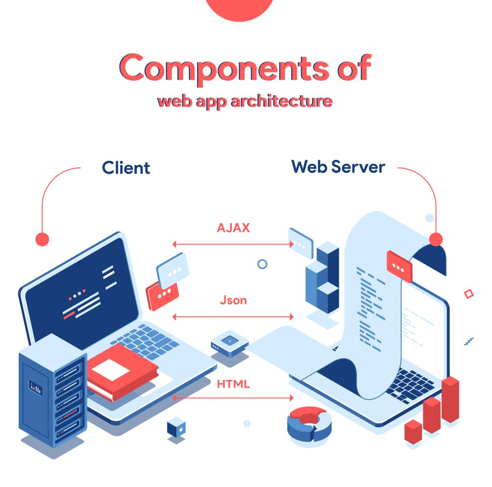
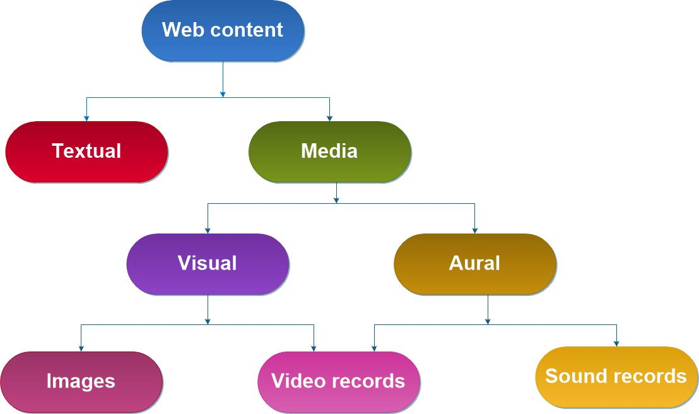

CLIENT/SERVER
The client/server model is a network architecture where the client
requests services or resources, and the server provides them. Clients
are typically user-facing devices or applications, while servers are
powerful systems that store data, run applications, or manage network
resources. This model is the foundation of modern web services, allowing
efficient communication and data exchange over the internet.
COMPONENTS OF WEB APPLICATION

A web application has three main components: the client-side,
server-side, and database. The client-side (or frontend) runs in the
user's browser and handles the user interface using HTML, CSS, and
JavaScript. The server-side (or backend) processes requests, runs logic,
and communicates with the database. The database stores and manages the
application's data. These components work together to deliver dynamic,
interactive web experiences.
TYPES OF WEB CONTENT

Web content can be broadly divided into three types: static, dynamic,
and interactive. Static content includes fixed information like text,
images, or videos that don’t change unless updated manually. Dynamic
content is generated in real-time based on user input or data, such as
personalized dashboards or search results. Interactive content involves
user engagement, like forms, quizzes, or chat features, making the web
experience more engaging and responsive.
HTTP-HTTP REQUEST

HTTP (HyperText Transfer Protocol) is the foundation of data
communication on the web. It defines how messages are formatted and
transmitted between a client (like a browser) and a server. An HTTP
request is sent by the client to ask the server for something — such as a
web page, image, or data. It includes components like a method (e.g.,
GET, POST), a URL, headers, and sometimes a body. The server then
processes the request and sends back an HTTP response.
DYNAMIC WEBPAGES
Dynamic webpages are web pages that can change content in real-time,
often based on user input or data from a server. Unlike static pages,
which stay the same for every visitor, dynamic pages use server-side
scripting (like PHP, Node.js) or client-side scripting (like JavaScript)
to update content. Examples include login pages, search results, or
social media feeds. They make websites more interactive, personalized,
and responsive to user actions.
APPLICATION SERVERS

An application server is a type of software that runs business logic
for web applications. It sits between the web server and the database,
handling tasks like processing user requests, managing sessions, and
connecting to databases. Unlike a basic web server that only delivers
static content, an application server can generate dynamic content,
support APIs, and run backend code (like Java, .NET, or Python).
Examples include Apache Tomcat, GlassFish, and WildFly.
WEB SECURITY

Web security refers to the measures taken to protect websites and web
applications from threats like unauthorized access, data theft, or
cyberattacks. Common security practices include using HTTPS for secure
communication, authentication (like login systems), input validation to
prevent attacks like SQL injection or XSS (Cross-Site Scripting), and
firewalls to block harmful traffic. Strong web security helps ensure
confidentiality, integrity, and availability of data.
Back to Top